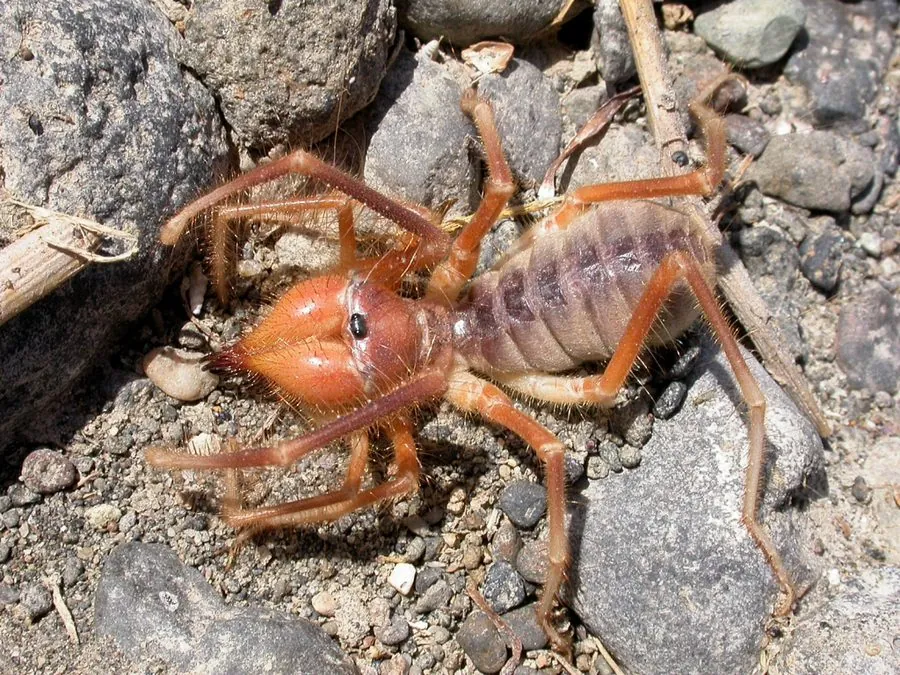

蛛形动物 · 动物界
避日蛛 Galeodes arabs

中东与北非沙漠中的大型避日蛛，奔跑极快、螯肢巨大，看起来凶猛但并无毒腺，被咬可能造成机械性伤口。
- 分类
- 门节肢动物门纲蛛形纲目避日目科避日蛛科属避日蛛属
- 栖息环境
- 中东与北非的沙漠、半荒漠、干旱草原与岩石地带
- 地理分布
- 中东和北非的干旱地区
- 保护级别
- IUCN 暂无评估；非中国原产，在中国无保护级别
物种志
避日蛛体长 4–7 厘米，身体分节明显，覆盖细密的毛，腹部长而柔软，八足粗壮，末端有爪；它最显眼的是头部前方一对巨大的螯肢，张开时像两把钳子，用于夹碎猎物。它没有毒腺，但螯肢强壮，咬合力大。
它分布于中东和北非的沙漠、半荒漠与干旱草原，多在夜间和清晨活动，奔跑速度极快，被誉为“沙漠中的短跑健将”，捕食昆虫、蜘蛛、蝎子，甚至小型蜥蜴和啮齿动物。繁殖期雌蛛在沙土中挖掘洞穴产卵，并守在洞口保护卵和幼蛛。避日蛛虽然外形凶猛，但不会主动攻击人类；被咬后可能造成疼痛的机械性伤口，需清洁消毒，敏感人群应就医。民间传说它有剧毒，其实并没有毒腺。
形态与习性
- 食性昆虫、蜘蛛、蝎子，甚至小型蜥蜴和啮齿动物
- 体长4–7 cm
- 寿命约 1–2 年
- 繁殖卵生，雌蛛挖洞穴产卵并守护幼蛛
- 活动节律夜行性，奔跑速度极快
- 防御螯肢强壮，被咬可造成机械性伤口，但无毒腺
趣味知识
- 避日蛛没有毒腺，但一对巨大的螯肢能夹碎昆虫和蝎子的外壳。
- 它奔跑速度极快，是沙漠中移动最快的节肢动物之一。
- 民间传说避日蛛剧毒，其实它只是咬合力强，被咬需清洁伤口。